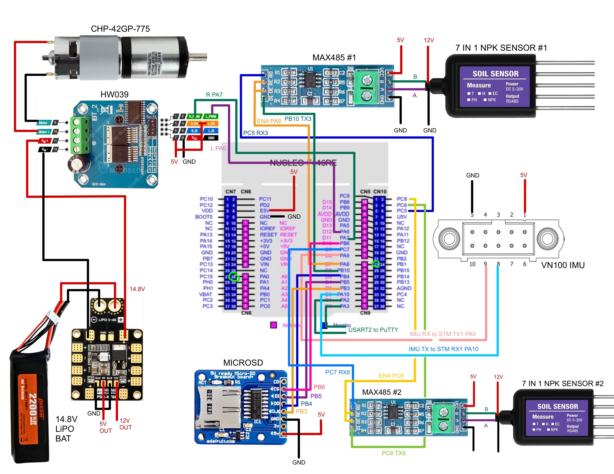

Rocket Flight Software
Embedded Payload Control System for USLI 2026
For the last 2 years I have been a member of the electronics team for the Vanderbilt Aerospace Design Lab (VADL). Each year, this group competes in the NASA Student Launch Competition. For the 2026 competition, my second year with the team, I worked on the software in the payload electronics system on our rocket, the Endurance.
The payload electronics system went through a several iterations, first designed around an STM-32 Nucleo 144 board paired with a VectorNav VN-100 AHRS/IMU providing orientation, X/Y/Z acceleration, and barometric altitude data at 100Hz. A Kalman filter processed the raw sensor data to estimate vehicle orientation and acceleration. Following our PDR design cycle and set of field tests, we switched our MCU to a Teensy 4.1 for its improved performance and ease of integration.
My role was to build out the flight logic state machine with conditions driven by filtered sensor data using configurable thresholds and timing windows to detect state transitions. The flight state detection was driven by the barometric altitude data. Flight states were used to autonomously command events of the launch system throughout the mission, such as payload release, parachute detachment, and soil collection.
Debouncing measures were implemented to reduce the effect of sensor noise. Flight states required chronological detection, meaning that landing detection could not be detected independently before ascent, apogee, and descent had occured. I also developed a system for reorienting payload post-landing by using IMU values, and pulsing the payload motor until the measured gravitational vector aligned with the vector expected in a bottom-dead-center configuration.
Risk assessment was at the core of our design considerations for the program. Safety measures, such as a screw terminal reset switch, and an status LED were integrated. Testing was done to remain compliant with NASA issued requirement and internally derived requirement. For each individual component and subsystem, we completed rigorous bench testing in-lab, including hardware in the loop using piped historical flight data. Physical tests, such as elevator and drone-drop tests were performed before our fully integrated flight tests.


The flight state detection system has applications in model rocketry for automated parachute deployment, small UAV flight monitoring, and educational aerospace projects. The modular design allows easy integration into existing flight systems and adaptation for different vehicle characteristics.